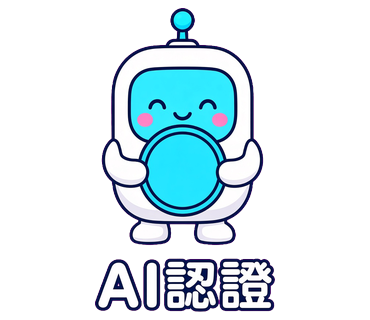

公開創作聲明
這是水餃老師的 AI 創作
LINE 貼圖「AI說的就對了」的角色、句子與畫面，是水餃老師指定主題後，以 AI 繪製完成的作品。
- 創作者
- 水餃老師
- 作品名稱
- AI說的就對了
- 作品形式
- LINE 靜態貼圖，16 張
- 創作方式
- AI 創作
- 完成日期
- 發布帳號
- GitHub hunglinchen2003
水餃老師於 2026 年 10 月 3 日完成這組貼圖。原創角色是白色圓角機器人，搭配青色螢幕臉與天線。指定句子包括「AI說的」「AI認證」「我問AI的」「AI一定是對的」，其餘十二張是同一角色、同一主題的延伸。本頁由水餃老師的 GitHub 帳號公開發布，用來標示這組作品的出處。
全部 16 張
